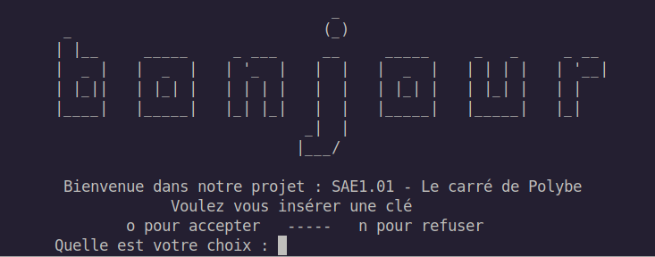
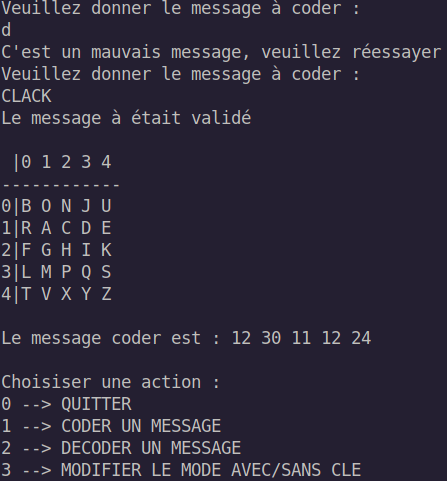
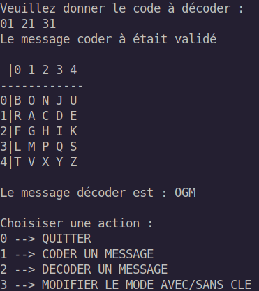
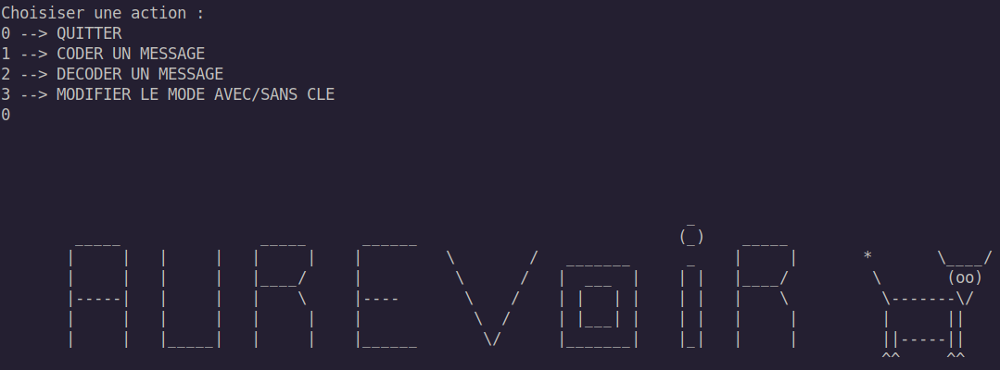

.
Le Carré de Polybe, ma première "application". Le principe est de faire un chiffrement par substition pour coder un message. Ce chiffrement est évidement d'une qualité "horrible", aucun message sérieux ne sera jamais chiffré avec ce programme.
Le principe est de donner des messages à coder (une phrase) ou à décoder (une suite de nombres à 2 chiffres avec chaque chiffre entre 1 et 5 ayant 25 lettres possible (5x5) et W exclus). On peut changer l'ordre du carré en insérent une clé comme "BONJOUR" (le O n'est compté au'une seul fois) qui change la forme du carré de Polybe. Exemple d'utilisation pour coder un message une fois la clé "BONJOUR" insérer.
D'un point de vue éducatif, ce premier travail guidé servait principalement à vérifier si notre niveau algorithmique était suffisant. En groupe de 3, ce projet à mis en avant l'idée que chaque future projet est un travail d'équipe et que chaque personnes peut ammener une solution différentes à un même problème.
-> Menu de démarrage
-> Menu de séléction d'option

-> Changement de clé

-> Coder un message
-> Decoder
-> Quitter l'application
